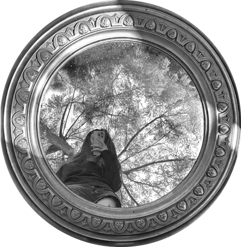

<!doctype html>
<html lang="en"><head>
<meta charset="utf-8"><meta name="viewport" content="width=device-width,initial-scale=1">
<title>Avatar Water D</title>
<link rel="preconnect" href="https://fonts.googleapis.com">
<link href="https://fonts.googleapis.com/css2?family=Inter:wght@400;500&display=swap" rel="stylesheet">
<style>
:root{--bg:#fff;--fg:#0d0d0d;--muted:#7a7a7a;--faint:#a8a8a8;--card:#f4f4f4}
@media (prefers-color-scheme:dark){:root:not([data-theme="light"]){--bg:#0d0d0d;--fg:#fff;--card:#1a1a1a}}
:root[data-theme="dark"]{--bg:#0d0d0d;--fg:#fff;--card:#1a1a1a}
*{box-sizing:border-box;margin:0}
body{background:var(--bg);color:var(--fg);font-family:Inter,system-ui,sans-serif;min-height:100vh;padding:24px 16px 48px}
.grid{display:grid;grid-template-columns:repeat(auto-fit,minmax(300px,1fr));gap:12px;max-width:1000px;margin:0 auto}
.grid + .grid{margin-top:12px}
.cell{background:var(--card);border-radius:20px;min-height:440px;display:flex;flex-direction:column;align-items:center;justify-content:center;text-align:center;padding:48px 16px 32px;position:relative}
.lbl{position:absolute;top:16px;left:20px;right:20px;text-align:left;font-size:13px;line-height:1.4;color:var(--muted)}
.lbl b{font-weight:500;color:var(--fg)}
.av{position:relative;border-radius:50%;margin-bottom:22px;flex:none}
.av img,.av canvas{position:absolute;inset:0;width:100%;height:100%;border-radius:50%;pointer-events:none}
h1{font-size:26px;font-weight:500;line-height:1.15;letter-spacing:-.025em;margin-bottom:16px}
p{color:var(--muted);font-size:17px;line-height:1.38;max-width:300px}
</style></head><body>
<div class="grid" id="g3"></div>
<script>
const CELLS = [
  ["g3", "ripple", 96, "<b>D 水面 · 96px</b> · 鼠标划过搅动水面、画面轻轻折射，划过处变彩色再褪回灰色；划完镜子贴边划会飘落几片小叶子"],
  ["g3", "ripple", 58, "<b>D 水面 · 58px</b>"],
];
for (const [g, mode, size, lbl] of CELLS) {
  document.getElementById(g).insertAdjacentHTML("beforeend", `<div class="cell"><span class="lbl">${lbl}</span>
    <div class="av" data-mode="${mode}" style="width:${size}px;height:${size}px"><canvas></canvas></div>
    <h1>Break it down,<br>build it back</h1><p>Hi! I'm dakota.<br>I question what’s obvious to understand what’s underneath.</p></div>`);
}

const col = new Image(); col.src = "img/av-c.webp";
const rnd = (a, b) => a + Math.random() * (b - a);

// leaf: a slim lens pointed at both ends, length 2, width ~0.7
function leafPath(ctx) { ctx.beginPath(); ctx.moveTo(-1, 0); ctx.quadraticCurveTo(0, -0.62, 1, 0); ctx.quadraticCurveTo(0, 0.62, -1, 0); }
// the mirror frame's motif: a heart-shaped leaf, tip pointing along +x
function motifPath(ctx) {
  ctx.beginPath(); ctx.moveTo(1, 0);
  ctx.bezierCurveTo(0.35, -0.35, -0.25, -0.95, -0.75, -0.55);
  ctx.bezierCurveTo(-1.05, -0.3, -0.95, 0, -0.62, 0);
  ctx.bezierCurveTo(-0.95, 0, -1.05, 0.3, -0.75, 0.55);
  ctx.bezierCurveTo(-0.25, 0.95, 0.35, 0.35, 1, 0); ctx.closePath();
}

const fx = [...document.querySelectorAll(".av:not([data-mode=ripple])")].map((el) => {
  const cv = el.querySelector("canvas");
  const o = { el, cv, ctx: cv.getContext("2d"), mode: el.dataset.mode, S: 0, pts: [], parts: [], cur: null, prev: null, light: 0, lx: 0, ly: 0 };
  o.size = () => { o.d = Math.min(devicePixelRatio || 1, 3); o.S = el.offsetWidth; cv.width = cv.height = Math.round(o.S * o.d); };
  o.size();
  if (o.mode === "dapple") { // leaf shadows pinned over the photo; they sway, the light moves
    o.shade = [...Array(16)].map(() => ({ x: rnd(0, 1), y: rnd(0, 1), a: rnd(0, 6.28), s: rnd(0.07, 0.13), ph: rnd(0, 6.28), sp: rnd(0.7, 1.3) }));
  }
  return o;
});
addEventListener("resize", () => fx.forEach((o) => o.size()));

let raf = 0;
const kick = () => { if (!raf) raf = requestAnimationFrame(draw); };
addEventListener("pointermove", (e) => {
  const now = performance.now();
  for (const o of fx) {
    const r = o.el.getBoundingClientRect(), x = e.clientX - r.left, y = e.clientY - r.top, M = o.S * 0.3;
    const near = x > -M && y > -M && x < o.S + M && y < o.S + M;
    if (!near) { o.cur = null; o.prev = null; continue; }
    if (o.mode === "lens") o.pts.push([x, y, now]);
    if (o.mode === "leaf" || o.mode === "motif") {
      if (o.prev) {
        const dt = Math.max(8, now - o.prev[2]), vx = (x - o.prev[0]) / dt, vy = (y - o.prev[1]) / dt, sp = Math.hypot(vx, vy);
        // faster swipe → more leaves, thrown further
        let n = Math.min(5, 0.6 + sp * 2.4 * (dt / 16));
        if (Math.random() < n % 1) n = Math.ceil(n); else n = Math.floor(n);
        for (let i = 0; i < n; i++) {
          const dir = Math.atan2(vy, vx) + rnd(-0.6, 0.6), push = Math.min(sp, 1.6) * rnd(0.35, 0.7);
          o.parts.push({
            x: x + rnd(-4, 4), y: y + rnd(-4, 4),
            vx: Math.cos(dir) * push, vy: Math.sin(dir) * push,          // px per ms
            a: dir + rnd(-0.4, 0.4), va: rnd(-0.006, 0.006),
            flip: rnd(0, 6.28), vf: rnd(0.008, 0.016),                  // tumbling: width squashes as it turns over
            L: o.S * rnd(o.mode === "motif" ? 0.09 : 0.08, o.mode === "motif" ? 0.14 : 0.13),
            t0: now, life: rnd(700, 1000),
          });
        }
      }
      o.prev = [x, y, now];
    }
    o.cur = [x, y];
  }
  kick();
}, { passive: true });
addEventListener("pointerleave", () => fx.forEach((o) => { o.cur = null; o.prev = null; }));

let last = performance.now();
function draw(now) {
  const dt = Math.min(40, now - last); last = now;
  let live = false;
  for (const o of fx) {
    const { ctx, S, d } = o;
    ctx.setTransform(d, 0, 0, d, 0, 0);
    ctx.globalCompositeOperation = "source-over";
    ctx.clearRect(0, 0, S, S);
    ctx.fillStyle = "#000";

    if (o.mode === "lens") {
      const R = S * 0.3;
      o.pts = o.pts.filter((p) => now - p[2] < 520);
      for (const [x, y, t] of o.pts) { const k = 1 - (now - t) / 520; ctx.globalAlpha = k * k; ctx.beginPath(); ctx.arc(x, y, R * (0.55 + 0.45 * k), 0, 6.283); ctx.fill(); }
      ctx.globalAlpha = 1;
      if (o.cur) { ctx.beginPath(); ctx.arc(o.cur[0], o.cur[1], R, 0, 6.283); ctx.fill(); }
      if (o.pts.length || o.cur) live = true;
    }

    if (o.mode === "leaf" || o.mode === "motif") {
      const shape = o.mode === "motif" ? motifPath : leafPath;
      o.parts = o.parts.filter((p) => now - p.t0 < p.life);
      for (const p of o.parts) {
        const age = (now - p.t0) / p.life;
        p.vx *= Math.pow(0.992, dt); p.vy = p.vy * Math.pow(0.992, dt) + 0.00028 * dt;   // air drag, then a slow fall
        p.x += p.vx * dt + Math.sin(p.flip) * 0.06 * dt; p.y += p.vy * dt;               // sideways sway while falling
        p.a += p.va * dt; p.flip += p.vf * dt;
        const sq = 0.25 + 0.75 * Math.abs(Math.cos(p.flip));
        const sc = age < 0.12 ? age / 0.12 : 1;
        ctx.globalAlpha = age < 0.55 ? 1 : 1 - (age - 0.55) / 0.45;
        ctx.save(); ctx.translate(p.x, p.y); ctx.rotate(p.a); ctx.scale(p.L * sc, p.L * sc * sq); shape(ctx); ctx.restore(); ctx.fill();
      }
      ctx.globalAlpha = 1;
      if (o.parts.length) live = true;
    }

    if (o.mode === "dapple") {
      o.light += ((o.cur ? 1 : 0) - o.light) * Math.min(1, dt / 90);
      if (o.cur) { if (o.light < 0.05) { o.lx = o.cur[0]; o.ly = o.cur[1]; } o.lx += (o.cur[0] - o.lx) * Math.min(1, dt / 45); o.ly += (o.cur[1] - o.ly) * Math.min(1, dt / 45); }
      if (o.light > 0.01) {
        const R = S * 0.36;
        const g = ctx.createRadialGradient(o.lx, o.ly, 0, o.lx, o.ly, R);
        g.addColorStop(0, `rgba(0,0,0,${o.light})`); g.addColorStop(0.7, `rgba(0,0,0,${o.light})`); g.addColorStop(1, "rgba(0,0,0,0)");
        ctx.fillStyle = g; ctx.beginPath(); ctx.arc(o.lx, o.ly, R, 0, 6.283); ctx.fill();
        ctx.globalCompositeOperation = "destination-out"; ctx.fillStyle = "#000";
        const t = now / 1000;
        for (const s of o.shade) {
          const sw = Math.sin(t * 1.6 * s.sp + s.ph);
          ctx.save(); ctx.translate(s.x * S + sw * S * 0.025, s.y * S + Math.cos(t * 1.3 * s.sp + s.ph) * S * 0.012);
          ctx.rotate(s.a + sw * 0.18); ctx.scale(S * s.s, S * s.s * 0.62); leafPath(ctx); ctx.restore(); ctx.fill();
        }
        live = true;
      }
    }

    if (col.complete && col.naturalWidth) { ctx.globalCompositeOperation = "source-in"; ctx.globalAlpha = 1; ctx.drawImage(col, 0, 0, S, S); }
  }
  raf = live ? requestAnimationFrame(draw) : 0;
}
</script>
<script>
// D: a water surface over the photo. The pointer stirs it; the photo is refracted by the surface slope
// (sampled smoothly so nothing jitters), and where the pointer has passed the photo is wet: colour shows, then dries back.
(() => {
  const els = [...document.querySelectorAll('.av[data-mode="ripple"]')];
  const load = (src) => new Promise((r) => { const i = new Image(); i.onload = () => r(i); i.src = src; });
  Promise.all([load("img/av-c.webp"), load("img/av-g.webp")]).then(([C, G]) => {
    const sims = els.map((el) => {
      const cv = el.querySelector("canvas"), ctx = cv.getContext("2d");
      const d = Math.min(devicePixelRatio || 1, 2), S = el.offsetWidth, N = Math.round(S * d);
      cv.width = cv.height = N;
      const px = (img) => { const c = document.createElement("canvas"); c.width = c.height = N; const x = c.getContext("2d"); x.drawImage(img, 0, 0, N, N); return x.getImageData(0, 0, N, N).data; };
      const col = px(C), gry = px(G);
      ctx.putImageData(new ImageData(new Uint8ClampedArray(gry), N, N), 0, 0);
      return { el, ctx, S, N, d, col, gry, a: new Float32Array(N * N), b: new Float32Array(N * N), wet: new Float32Array(N * N), out: ctx.createImageData(N, N), prev: null, calm: 0 };
    });
    let raf = 0;
    const stamp = (A, N, x, y, R, f, cap) => {
      const r = Math.ceil(R);
      for (let j = -r; j <= r; j++) for (let i = -r; i <= r; i++) {
        const X = Math.round(x + i), Y = Math.round(y + j), q = (i * i + j * j) / (R * R);
        if (X < 1 || Y < 1 || X >= N - 1 || Y >= N - 1 || q > 1) continue;
        const k = Y * N + X, v = A[k] + f * (1 - q) * (1 - q);
        A[k] = cap && v > 1 ? 1 : v;
      }
    };
    addEventListener("pointermove", (e) => {
      for (const o of sims) {
        const R = o.el.getBoundingClientRect(), M = o.S * 0.25;
        const x = e.clientX - R.left, y = e.clientY - R.top;
        if (x < -M || y < -M || x > o.S + M || y > o.S + M) { o.prev = null; continue; }
        const X = x * o.d, Y = y * o.d, Rw = o.N * 0.26, Rd = o.N * 0.035;
        const from = o.prev || [X, Y], dx = X - from[0], dy = Y - from[1], dist = Math.hypot(dx, dy);
        const n = Math.max(1, Math.ceil(dist / (Rd * 1.5)));
        for (let k = 1; k <= n; k++) {
          const px = from[0] + dx * k / n, py = from[1] + dy * k / n;
          stamp(o.wet, o.N, px, py, Rw, 1.4 / n * Math.min(n, 3), true);
          stamp(o.a, o.N, px, py, Rd, 9, false);           // a medium-sized dip along the path
        }
        o.prev = [X, Y]; o.calm = 0;
      }
      if (!raf) raf = requestAnimationFrame(step);
    }, { passive: true });
    function step() {
      let live = false;
      for (const o of sims) {
        if (o.calm > 180) continue;
        const { N, col, gry, wet, a, b } = o, out = o.out.data;
        // slow water: wave equation in velocity form with a low wave speed, damped so it settles in a second or two
        const C2 = 0.09;
        for (let y = 1; y < N - 1; y++) for (let x = 1; x < N - 1; x++) {
          const i = y * N + x;
          b[i] = (b[i] + (a[i - 1] + a[i + 1] + a[i - N] + a[i + N] - 4 * a[i]) * C2) * 0.978;
        }
        let energy = 0, wetAny = false;
        for (let i = 0; i < N * N; i++) { a[i] = (a[i] + b[i]) * 0.994; energy += b[i] < 0 ? -b[i] : b[i]; }
        for (let y = 0; y < N; y++) for (let x = 0; x < N; x++) {
          const i = y * N + x;
          const sx = x > 0 && x < N - 1 ? a[i - 1] - a[i + 1] : 0, sy = y > 0 && y < N - 1 ? a[i - N] - a[i + N] : 0;
          const w = wet[i] = wet[i] * 0.982; if (w > 0.004) wetAny = true;
          let fx = x + sx * 0.9, fy = y + sy * 0.9;
          fx = fx < 0 ? 0 : fx > N - 1.001 ? N - 1.001 : fx; fy = fy < 0 ? 0 : fy > N - 1.001 ? N - 1.001 : fy;
          const X = fx | 0, Y = fy | 0, tx = fx - X, ty = fy - Y, k = (Y * N + X) * 4, kr = k + 4, kd = k + N * 4, kdr = kd + 4, o4 = i * 4;
          const w00 = (1 - tx) * (1 - ty), w10 = tx * (1 - ty), w01 = (1 - tx) * ty, w11 = tx * ty;
          const m = w * w * (3 - 2 * w), lit = 1 + Math.max(-0.08, Math.min(0.14, (sx + sy) * 0.02));
          for (let c = 0; c < 3; c++) {
            const g = gry[k + c] * w00 + gry[kr + c] * w10 + gry[kd + c] * w01 + gry[kdr + c] * w11;
            const v = col[k + c] * w00 + col[kr + c] * w10 + col[kd + c] * w01 + col[kdr + c] * w11;
            out[o4 + c] = (g + (v - g) * m) * lit;
          }
          out[o4 + 3] = gry[k + 3] * w00 + gry[kr + 3] * w10 + gry[kd + 3] * w01 + gry[kdr + 3] * w11;
        }
        o.ctx.putImageData(o.out, 0, 0);
        o.calm = energy / (N * N) < 0.002 && !wetAny ? o.calm + 1 : 0;
        live = true;
      }
      raf = live ? requestAnimationFrame(step) : 0;
    }
  });
})();
</script>
<script>
// After the mirror has been stirred, the hand carries a few leaves off it:
// moving on beside the mirror sheds small leaves (greens taken from the photo) that tumble, drift and fall away.
(() => {
  if (matchMedia("(prefers-reduced-motion: reduce)").matches) return;
  const mirrors = [...document.querySelectorAll('.av[data-mode="ripple"]')];
  const cv = document.createElement("canvas");
  Object.assign(cv.style, { position: "fixed", inset: "0", width: "100vw", height: "100vh", pointerEvents: "none", zIndex: 5 });
  document.body.appendChild(cv);
  const ctx = cv.getContext("2d");
  let d = 1;
  const size = () => { d = Math.min(devicePixelRatio || 1, 2); cv.width = innerWidth * d; cv.height = innerHeight * d; };
  size(); addEventListener("resize", size);
  const GREENS = ["#5d7a2e", "#7c9a3d", "#98b356", "#4a6526", "#aac46b", "#6b8a34"];
  const rnd = (a, b) => a + Math.random() * (b - a);
  let charge = 0, chargedAt = 0, prev = null, leaves = [], raf = 0;
  addEventListener("pointermove", (e) => {
    const now = performance.now(), x = e.clientX, y = e.clientY;
    let onMirror = false, near = false, mw = 96;
    for (const m of mirrors) {
      const r = m.getBoundingClientRect(), cx = r.left + r.width / 2, cy = r.top + r.height / 2, dist = Math.hypot(x - cx, y - cy);
      if (dist < r.width / 2) onMirror = true;
      if (dist < r.width / 2 + 36) { near = true; mw = r.width; }     // leaves only drift in a narrow ring around the mirror
    }
    if (onMirror) { charge = 1; chargedAt = now; }
    else if (prev && near && charge > 0.05) {
      const dt = Math.max(8, now - prev[2]), vx = (x - prev[0]) / dt, vy = (y - prev[1]) / dt, sp = Math.hypot(vx, vy);
      // a few leaves, fewer as the hand moves away from the mirror in time
      if (Math.random() < Math.min(0.4, sp * 0.35) * charge) {
        const dir = Math.atan2(vy, vx);
        leaves.push({ x, y, ox: x, drift: Math.max(-0.03, Math.min(0.03, vx * 0.05)), ph: rnd(0, 6.28), per: rnd(1700, 2300), amp: mw * rnd(0.07, 0.1), sink: rnd(0.012, 0.018), a0: rnd(-0.5, 0.5) + (Math.random() < 0.5 ? 0 : Math.PI), L: mw * rnd(0.024, 0.032), c: GREENS[(Math.random() * GREENS.length) | 0], t0: now, life: rnd(2600, 3400) });
        if (leaves.length > 7) leaves.shift();
      }
    }
    prev = [x, y, now];
    if (!raf) raf = requestAnimationFrame(draw);
  }, { passive: true });
  let last = performance.now();
  function draw(now) {
    const dt = Math.min(40, now - last); last = now;
    charge = Math.max(0, 1 - (now - chargedAt) / 2500);    // the leaves run out about 2.5 s after leaving the mirror
    ctx.setTransform(d, 0, 0, d, 0, 0); ctx.clearRect(0, 0, innerWidth, innerHeight);
    leaves = leaves.filter((l) => now - l.t0 < l.life);
    for (const l of leaves) {
      // a falling leaf swings like a pendulum: side to side, tilting with the swing,
      // slowing at each end of the swing and sinking fastest through the middle
      const t = now - l.t0, age = t / l.life;
      l.ph += (dt / l.per) * 6.283;
      const sw = Math.sin(l.ph), through = Math.abs(Math.cos(l.ph));
      l.ox += l.drift * dt; l.drift *= Math.pow(0.996, dt);
      l.y += l.sink * (0.35 + 0.65 * through) * dt;
      const x = l.ox + sw * l.amp, tilt = l.a0 + Math.cos(l.ph) * 0.55;
      ctx.globalAlpha = 0.9 * Math.min(1, t / 350) * (age < 0.65 ? 1 : 1 - (age - 0.65) / 0.35);
      ctx.save(); ctx.translate(x, l.y); ctx.rotate(tilt); ctx.scale(l.L, l.L);
      // an ovate leaf: round shoulders near the stem, a soft tip, a tiny stalk
      ctx.beginPath();
      ctx.moveTo(-1, 0);
      ctx.bezierCurveTo(-0.7, -0.62, 0.35, -0.7, 1.05, 0);
      ctx.bezierCurveTo(0.35, 0.62, -0.7, 0.58, -1, 0);
      ctx.moveTo(-1, -0.04); ctx.lineTo(-1.35, -0.1); ctx.lineTo(-1.35, 0.04); ctx.lineTo(-1, 0.04);
      ctx.restore(); ctx.fillStyle = l.c; ctx.fill();
    }
    ctx.globalAlpha = 1;
    raf = leaves.length || charge > 0 ? requestAnimationFrame(draw) : 0;
  }
})();
</script>
</body></html>
